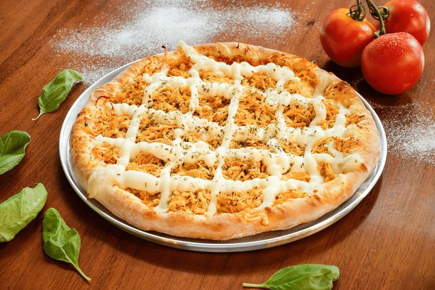
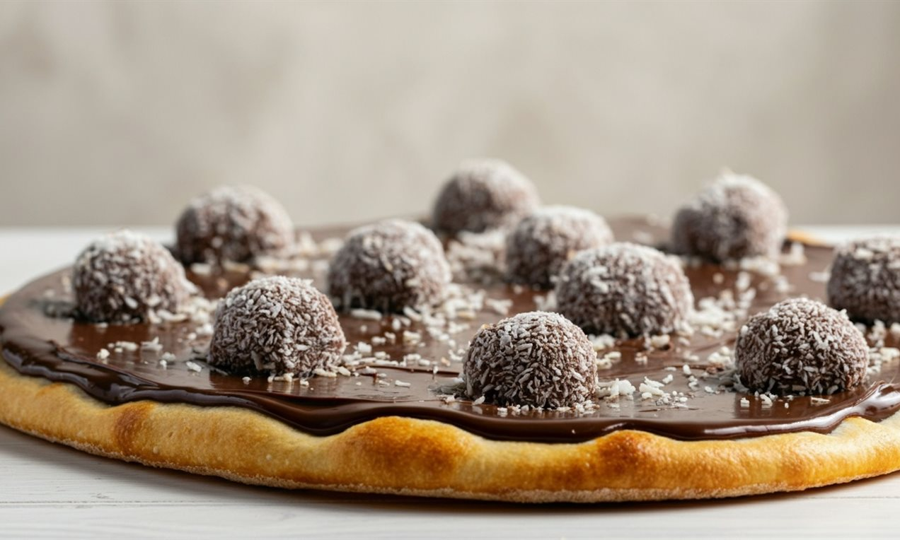
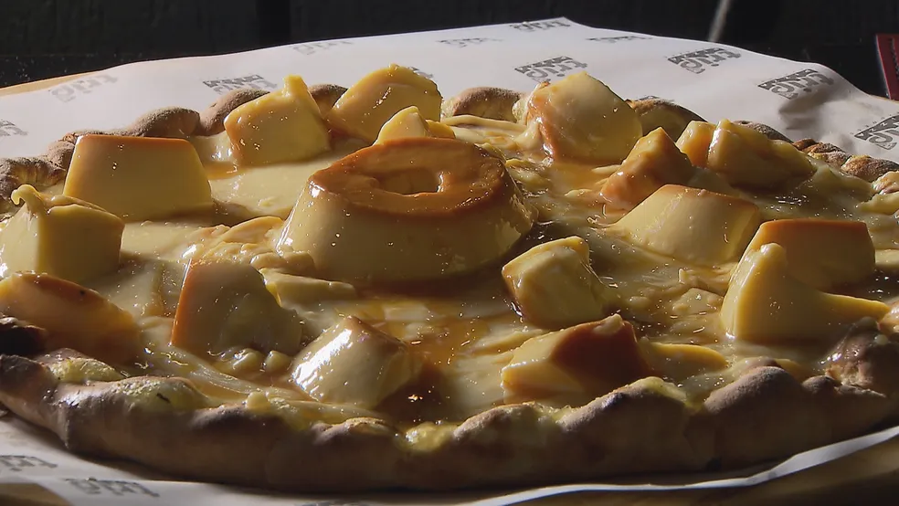
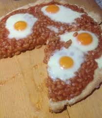
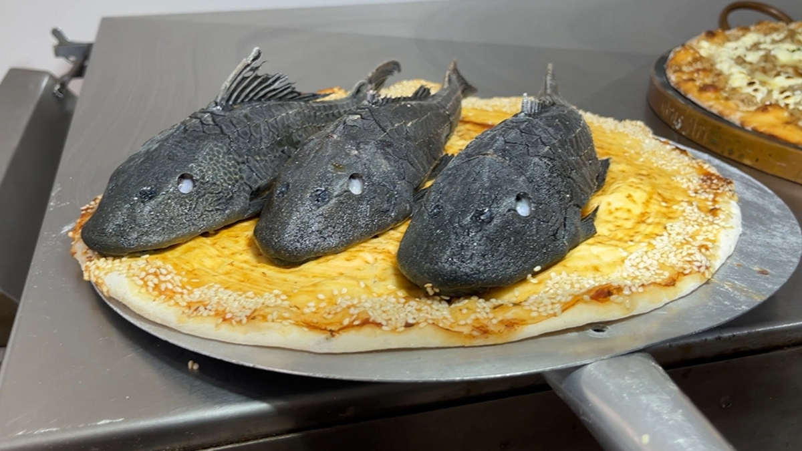
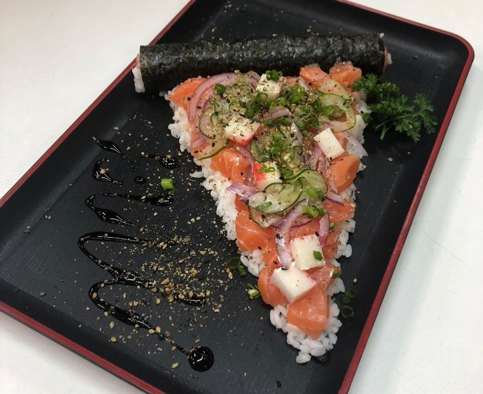

Início
Há mais de 20 anos servindo as melhores pizzas da região! Na Pizzaria Paulão Fera, nossa paixão é criar pizzas artesanais com ingredientes frescos e de alta qualidade. Venha experimentar o sabor autêntico da pizza italiana com um toque brasileiro.
Nosso compromisso é oferecer não apenas uma refeição, mas uma experiência gastronômica memorável. Cada pizza é preparada com carinho e dedicação, usando receitas que passaram de geração em geração.
Cardápio
Pizza de Mussarela
Mussarela de primeira qualidade, molho de tomate caseiro e orégano. Simplesmente deliciosa!

Pizza de Calabresa
Calabresa fatiada, cebola, mussarela e nosso molho especial. Um clássico brasileiro!

Pizza de Frango
Frango desfiado temperado, catupiry, milho verde e mussarela. Uma combinação incrível!
Pizza de Brigadeiro
Para os amantes de doces: brigadeiro cremoso, granulado e morangos frescos. Uma sobremesa irresistível!
Pizza de Pudim
Pudim cremoso, calda de caramelo e uma pitada de canela. A sobremesa perfeita para finalizar a refeição!
Pizza de Ovo com Feijão
Uma combinação brasileira: feijão temperado, ovos, bacon e queijo. Para os mais tradicionais!
Pizza de Peixe
Filé de peixe grelhado, molho especial, tomate e cebola. Uma opção leve e saborosa!
Pizza de Sushi
Para os mais ousados: salmão, arroz, cream cheese e algas. Uma fusão oriental incrível!
Nossa História
A Pizzaria Paulão Fera nasceu em 2003, quando o fundador Paulo Silva decidiu transformar sua paixão por pizzas em um negócio familiar. Começamos com uma pequena loja no centro da cidade e hoje somos referência em qualidade e sabor.
Nossa missão sempre foi oferecer o melhor da gastronomia italiana com um toque brasileiro, usando ingredientes frescos e receitas exclusivas que conquistaram nossa clientela ao longo dos anos.
Contato
Estamos localizados no coração da cidade, prontos para atendê-lo!
Endereço: Rua das Pizzas, 123 - Centro
Telefone: (11) 1234-5678
Horário de Funcionamento: Terça a Domingo, das 18h às 23h
Delivery: Disponível através dos principais aplicativos